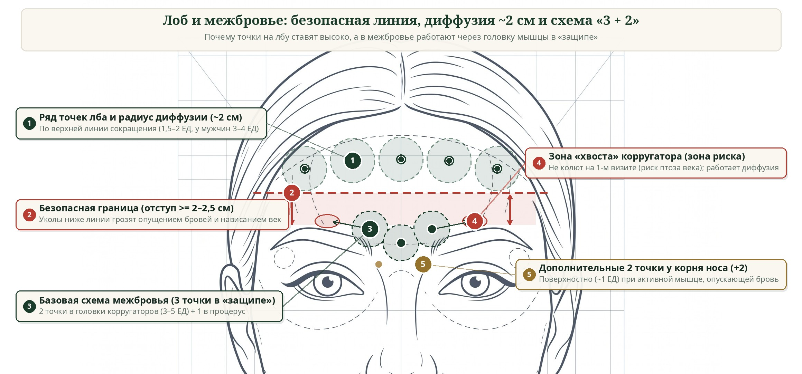

Лоб и межбровье: почему одна и та же процедура у двух людей выглядит по-разному
Лоб и межбровье — самые востребованные и одновременно самые «коварные» зоны для ботулинотерапии. Здесь рядом проходят единственная мышца, поднимающая бровь, и мощные мышцы-опускатели, а под кожей — верхний край глазницы. Разбираем, как анатомия диктует схему и откуда берутся типичные неудачные результаты.
Коротко о главном
- Лоб и межбровье работают как мышечные антагонисты. Лобная мышца поднимает брови, мышцы межбровья их опускают и сводят. Рассогласованная работа с этими двумя группами даёт либо «тяжёлый взгляд», либо новые морщины выше.
- Ключевым ориентиром безопасности служит верхний край глазницы. Всё, что вводится слишком близко к ней (ниже 2–2,5 см) или с упором в кость, повышает риск опущения брови и верхнего века.
- В межбровье выгоднее дать полноценную дозу в головку мышцы, чем «недолить». Недостаточная доза оставляет подвижными латеральные пучки — и вертикальный залом быстро возвращается.
- На лбу разумно начинать с умеренных доз. Докоррекция на 14-й день проста и предсказуема, а исправление избыточного расслабления лба требует долгого ожидания.
Суть проблемы: анатомия двух зон
Лобная мышца: тонкая настройка единственного поднимателя
Лобная мышца (m. frontalis) — широкая мышечная пластина, покрывающая лоб от сухожильного шлема у линии роста волос до кожи бровей. Её волокна идут вертикально, поэтому при сокращении кожа собирается в горизонтальные складки.
Особенность в том, что это единственная мышца в верхней трети лица, которая поднимает бровь. Всё остальное окружение работает на опускание. Поэтому лоб — самая «ювелирная» зона в ботулинотерапии: малейший перебор по дозе или занижение точек превращает открытый взгляд в нависающий.
Дополнительная сложность — индивидуальные анатомические варианты. У части людей волокна лобной мышцы идут сплошной широкой пластиной, у части — разделены центральным апоневротическим промежутком на два брюшка, а у некоторых мышца продолжается высоко под линию роста волос с формированием глубоких заломов у самого края причёски. Схема расстановки точек (5 точек в один ряд, 7 точек или двухрядная схема) у этих пациентов будет совершенно разной, хотя жалоба звучит одинаково: «морщины на лбу».
Межбровный комплекс: три мышцы, один «сердитый» взгляд
В глабелле (межбровной области) одновременно работают три мышечные структуры:
- Мышца, сморщивающая бровь (m. corrugator supercilii) — парная мышца с глубокой медиальной «головкой» (у начала брови) и более поверхностным латеральным «хвостом». Сводит брови к центру, формируя вертикальные межбровные заломы.
- Мышца гордецов (m. procerus) — непарная пирамидальная мышца по средней линии. Опускает кожу переносицы вниз, формируя поперечные складки на корне носа.
- Мышца, опускающая бровь (m. depressor supercilii) — небольшая парная мышца у внутреннего угла глаза и корня носа. Тянет медиальную часть брови вниз и кнутри, добавляя косые складки и «угрюмое» выражение.
Мышцы межбровья — одни из самых сильных на лице, и это принципиально определяет клиническую стратегию: здесь важно ввести полноценную рабочую дозу в центральную часть (головку) мышцы, а не «размазывать» препарат по множеству поверхностных точек.

Почему эти зоны биомеханически связаны
Если расслабить только межбровье, лобная мышца начинает работать активнее: она больше не уравновешена мышцами-опускателями, и на лбу могут появиться компенсаторные горизонтальные линии. Обратная ситуация — полностью «выключенный» лоб при сохранённой тяге межбровья: брови опускаются под действием неблокированных депрессоров, взгляд становится тяжёлым.
Поэтому в клинической практике верхнюю треть лица почти всегда планируют как единую систему, даже если субъективно пациента беспокоит только одна зона.
Как это работает: логика безопасной схемы
Правило безопасной линии на лбу
Точки на лобной мышце располагают по верхней линии активного сокращения — там, где при максимальном поднятии бровей проходит верхний ярус складок. Безопасный отступ от верхнего костного края глазницы составляет не менее 2–2,5 см: инъекции ниже этой границы блокируют нижние волокна лобной мышцы, удерживающие бровь, что ведёт к птозу брови.
Дальше работает физика диффузии: радиус распространения препарата от одной точки составляет около 2 см, поэтому при правильной дозировке раствор мягко охватывает брюшко мышцы. При невысоком лбе достаточно одного ряда точек (обычно 5–7 точек по 1,5–2 ЕД); при высоком анатомическом лбе схему адаптируют в два уровня, чтобы не оставить подвижными верхние пучки у линии роста волос.
Почему в межбровье не начинают с «хвостов» корругатора
Латеральный «хвост» мышцы, сморщивающей бровь, подходит близко к мышце, поднимающей верхнее веко (m. levator palpebrae superioris), и к надглазничному сосудисто-нервному пучку. Прямые инъекции в латеральную часть брови на первичном визите — одна из самых частых причин истинного птоза (опущения) верхнего века.
Грамотная клиническая тактика строится иначе: достаточную дозу (3–5 ЕД у женщин, 5–7 ЕД у мужчин) вводят в головку корругатора (медиальную часть, на 2 мм выше края брови в проекции мышечного валика), и за счёт объёма и диффузии препарат распределяется вдоль волокон, блокируя в том числе хвост мышцы. Если к 14-му дню латеральный пучок сохранил остаточную активность, его точечно дорабатывают микродозой на осмотре — это несравнимо безопаснее.
Дополнительные точки у корня носа (схема «3 + 2»)
Базовая разметка глабеллы включает 3 точки: две в головках корругаторов и одну по срединной линии в m. procerus. Но если при пробе «нахмуриться» видно, что головки бровей активно тянутся вниз с образованием косых складок у корня носа, — в работу вовлечена m. depressor supercilii. В таком случае схему расширяют до 5 точек («3 + 2»): добавляют симметрично по одной поверхностной (микропапульной) точке ~1 ЕД с обеих сторон у корня носа и медиального края брови (в проекции волокон m. depressor supercilii).
Глубина введения и работа в «защипе» с фиксацией края орбиты
В межбровной зоне головка корругатора и процерус залегают глубоко, поэтому инъекцию выполняют в толщу мышечного валика (на глубину 4–6 мм), предварительно захватив его пальцами в плотную кожно-мышечную складку — «защип». При этом вторым пальцем врач фиксирует и прижимает верхний край орбиты.
Пальцевой защип приподнимает мышечное брюшко над костью, а прижатие края глазницы создаёт механический барьер против смещения раствора вниз к мышце, поднимающей веко. Если кончик иглы коснулся надкостницы, её обязательно отводят назад на 1–2 мм: упор и введение препарата под надкостницу в зоне надглазничных отверстий повышает риск диффузии в полость орбиты.
Кому подойдёт, а когда воздержаться
Показания и ожидаемый результат
| Задача | Реалистичный результат |
|---|---|
| Горизонтальные линии лба при поднятии бровей | Заметное разглаживание рельефа; при выверенной дозе сохраняется живая мимика без эффекта «маски» |
| Глубокие вертикальные заломы между бровями | Снятие мышечного спазма и уменьшение глубины; застарелый дермальный штрих в покое перестаёт углубляться |
| Поперечные складки на переносице | Разглаживание складки при активной мимике |
| «Сердитое» выражение лица из-за гипертонуса глабеллы | Визуальное «раскрытие» межбровья и исчезновение привычного чувства мышечного напряжения |
Когда метод не сработает или противопоказан
- Низкое исходное положение бровей и избыток кожи верхнего века. Если у пациента бровь изначально лежит на костном крае орбиты, а лобная мышца постоянно приподнимает её компенсаторно (чтобы открыть поле зрения), расслабление лба опустит бровь и усилит нависание века. Здесь либо работают только с межбровьем и микродозами в самом верху лба, либо выбирают аппаратные/хирургические методы.
- Отёчно-деформационный морфотип и пастозность. Сокращения лобной мышцы помогают дренажу лимфы; полное «замораживание» лба у склонных к отёкам пациентов может дать утреннюю тяжесть над бровями.
- Абсолютные и общие противопоказания: беременность, лактация, миастенические синдромы, приём аминогликозидов, локальное воспаление в точках вкола.
Как проходит процедура и восстановление
Перед процедурой. Врач проводит мимическое картирование: просит высоко поднять брови (определяет верхнюю границу активности m. frontalis и количество рядов) и максимально нахмуриться (оценивает силу головки и длину хвоста корругатора, вклад процеруса и депрессоров брови). Разметка наносится на спокойное лицо.
Восстановление и нормальные реакции. Процедура занимает 15–20 минут без анестезии. В межбровье укол ощущается чуть ярче из-за толщины мышц. В первые сутки возможны микропапулы в местах вколов, лёгкое чувство «тяжести» или, наоборот, непривычного расслабления в области межбровья, иногда — кратковременная головная боль перестройки тонуса.
| Период | Что необходимо ограничить |
|---|---|
| Первые 3–4 часа | Горизонтальное положение и длительные наклоны лицом вниз |
| Первые 24 часа | Массаж, растирание лба и переносицы, плотные головные уборы, давящие на зону уколов |
| 3–5 дней | Алкоголь и интенсивные кардио-/силовые тренировки |
| 10–14 дней | Баня, сауна, горячие ванны, солярий и агрессивные тепловые процедуры |
| 14-й день | Очный осмотр врача и, при необходимости, ювелирная докоррекция |
Частые вопросы пациентов (FAQ)
Почему у подруги после той же процедуры лоб идеально гладкий, а у меня остались лёгкие линии?
Сравнивать нужно не название процедуры, а исходную анатомию: высоту лба, положение бровей относительно глазницы и склонность века к нависанию. Нередко врач сознательно сохраняет 15–20% подвижности лобной мышцы, чтобы ваши брови не опустились и взгляд остался открытым.
Правда ли, что «чем больше единиц вколоть, тем дольше и лучше эффект»?
Нет. В межбровье действительно важно ввести полную рабочую дозу в головку мышцы, чтобы блокировать сильные депрессоры. А вот на лбу избыток единиц приводит не к «красоте на год», а к опущению бровей и отёчности верхних век.
Останется ли у меня живая мимика после коррекции лба и межбровья?
Да, цель современной ботулинотерапии — убрать гипертонус и заламывание кожи в покое и при разговоре, сохранив мягкое движение бровей.
Что делать, если после уколов в другой клинике опустилась бровь или веко?
Опущение обратимо и проходит по мере восстановления нервно-мышечной передачи. Не пытайтесь самостоятельно массировать или греть зону в первые дни — обратитесь к врачу-косметологу для очной оценки (при истинном птозе века назначаются специальные капли и физиотерапевтический режим на период восстановления).
За сколько дней до важного мероприятия лучше делать процедуру?
Оптимально — за 2–3 недели до события: к 14-му дню препарат полностью раскроет действие, пройдёт контрольный осмотр, и даже случайная мелкая гематома успеет полностью исчезнуть.
Материал носит информационно-ознакомительный характер и не заменяет очную консультацию врача-косметолога. Процедуры подбираются индивидуально после диагностики.